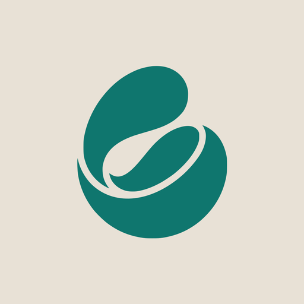

Nomad
· Primer viaje gratis hasta el 3 de diciembre
¿Qué es Nomad?
Tu imprescindible
para viajar.
09:00 · antes de salir
Te organiza el viaje,
día a día.
10:30 · en la plaza
Te cuenta lo que
tienes delante.
La audioguía
Estás en el centro neurálgico
de la reconstrucción de Lisboa.
13:30 · a la hora de comer
Te recomienda qué ver
y dónde comer.
19:30 · al caer la tarde
Lleva las cuentas
del grupo.
23:00 · antes de dormir
Y tienes un asistente
para lo que necesites.
Tu primer viaje
con Nomad,
gratis.
Hasta el 3 de diciembre.
Un viaje gratis por cuenta.
Nomad
Semana de Black Friday
Tu primer
viaje,
gratis.
Hasta el 3 de diciembre.
Un viaje gratis por cuenta.

Nomad: guía de viajes


Tu primer viaje, gratis
hasta el 3 de diciembre.
Un viaje gratis por cuenta.
Después, desde 2,99 € el viaje.
Enlace en el perfil
App Store es una marca de servicio de Apple Inc.
Google Play y el logotipo de Google Play
son marcas comerciales de Google LLC.